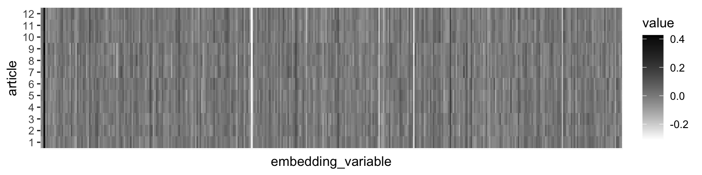

phylogenies
1.14 buildTree
This function is a swiss army knife for tree building. It takes as input alignments or existing phylogenies from which to derive a phylogeny of interest, it can use neighbor-joining or maximum liklihood methods (with model optimization), it can run bootstrap replicates, and it can calculate ancestral sequence states. To illustrate, let’s look at some examples:
1.14.1 newick input
Let’s use the Busta lab’s plant phylogeny [derived from Qian et al., 2016] to build a phylogeny with five species in it.
tree <- buildTree(
scaffold_type = "newick",
scaffold = "https://thebustalab.github.io/data/plant_phylogeny.newick",
members = c("Sorghum_bicolor", "Zea_mays", "Setaria_viridis", "Arabidopsis_thaliana", "Amborella_trichopoda")
)
## Pro tip: most tree read/write functions reset node numbers.
## Fortify your tree and save it as a csv file to preserve node numbering.
## Do not save your tree as a newick or nexus file.
tree
##
## Phylogenetic tree with 5 tips and 4 internal nodes.
##
## Tip labels:
## Amborella_trichopoda, Zea_mays, Sorghum_bicolor, Setaria_viridis, Arabidopsis_thaliana
## Node labels:
## , , ,
##
## Rooted; includes branch lengths.
plot(tree)
Cool! We got our phylogeny. What happens if we want to build a phylogeny that has a species on it that isn’t in our scaffold? For example, what if we want to build a phylogeny that includes Arabidopsis neglecta? We can include that name in our list of members:
tree <- buildTree(
scaffold_type = "newick",
scaffold_in_path = "https://thebustalab.github.io/data/plant_phylogeny.newick",
members = c("Sorghum_bicolor", "Zea_mays", "Setaria_viridis", "Arabidopsis_neglecta", "Amborella_trichopoda")
)
## Scaffold newick tip Arabidopsis_thaliana substituted with Arabidopsis_neglecta
## Pro tip: most tree read/write functions reset node numbers.
## Fortify your tree and save it as a csv file to preserve node numbering.
## Do not save your tree as a newick or nexus file.
tree
##
## Phylogenetic tree with 5 tips and 4 internal nodes.
##
## Tip labels:
## Amborella_trichopoda, Zea_mays, Sorghum_bicolor, Setaria_viridis, Arabidopsis_neglecta
## Node labels:
## , , ,
##
## Rooted; includes branch lengths.
plot(tree)
Note that buildTree informs us: “Scaffold newick tip Arabidopsis_thaliana substituted with Arabidopsis_neglecta”. This means that Arabidopsis neglecta was grafted onto the tip originally occupied by Arabidopsis thaliana. This behaviour is useful when operating on a large phylogenetic scale (i.e. where exact phylogeny topology is not critical below the family level). However, if a person is interested in using an existing newick tree as a scaffold for a phylogeny where genus-level topology is critical, then beware! Your scaffold may not be appropriate if you see that message. When operating at the genus level, you probably want to use sequence data to build your phylogeny anyway. So let’s look at how to do that:
1.14.2 alignment input
Arguments in this case are:
- “scaffold_type”: “amin_alignment” or “nucl_alignment” for amino acids or nucleotides.
- “scaffold_in_path”: path to the fasta file that contains the alignment from which you want to build a tree.
- “ml”: Logical, TRUE if you want to use maximum liklihood, FALSE if not, in which case neighbor joining will ne used.
- “model_test”: if you say TRUE to “ml”, should buildTree test different maximum liklihood models and then use the “best” one?
- “bootstrap”: TRUE or FALSE, whether you want bootstrap values on the nodes.
- “ancestral_states”: TRUE or FALSE, should buildTree() compute the ancestral sequence at each node?
- “root”: NULL, or the name of an accession that should form the root of the tree.
buildTree(
scaffold_type = "amin_alignment",
scaffold_in_path = "/path_to/a_folder_for_alignments/all_amin_seqs.fa",
ml = FALSE,
model_test = FALSE,
bootstrap = FALSE,
ancestral_states = FALSE,
root = NULL
)1.15 plotting trees
There are several approaches to plotting trees. A simple one is using the base plot function:
test_tree_small <- buildTree(
scaffold_type = "newick",
scaffold_in_path = "https://thebustalab.github.io/data/plant_phylogeny.newick",
members = c("Sorghum_bicolor", "Zea_mays", "Setaria_viridis")
)
## Pro tip: most tree read/write functions reset node numbers.
## Fortify your tree and save it as a csv file to preserve node numbering.
## Do not save your tree as a newick or nexus file.
plot(test_tree_small)
Though this can get messy when there are lots of tip labels:
set.seed(122)
test_tree_big <- buildTree(
scaffold_type = "newick",
scaffold_in_path = "https://thebustalab.github.io/data/plant_phylogeny.newick",
members = plant_species$Genus_species[abs(floor(rnorm(60)*100000))]
)
## The following species belong to a genus not found in the newick scaffold and were removed:
## Steirodiscus_schlechteri
## Phyllagathis_marumiaetricha
## Jungia_sordida
## Carpacoce_heteromorpha
## Huttonaea_woodii
## Ferulago_macrocarpa
## Echinospartum_lusitanicum
## Scurrula_lepidota
## Astronidium_sudestense
##
## Scaffold newick tip Peperomia_fraseri substituted with Peperomia_kimachii
## Scaffold newick tip Telipogon_pulcher substituted with Telipogon_alberti
## Scaffold newick tip Elaeocarpus_angustifolius substituted with Elaeocarpus_miriensis
## Scaffold newick tip Angelica_sinensis substituted with Angelica_anomala
## Scaffold newick tip Senecio_pterophorus substituted with Senecio_isatideus
## Scaffold newick tip Macroscepis_hirsuta substituted with Macroscepis_pleistantha
## Scaffold newick tip Tithonia_diversifolia substituted with Tithonia_fruticosa
## Scaffold newick tip Spermacoce_princeae substituted with Spermacoce_latituba
## Scaffold newick tip Bothriocline_laxa substituted with Bothriocline_amphicoma
## Scaffold newick tip Siler_montanum substituted with Siler_zernyi
## Scaffold newick tip Teucrium_betchei substituted with Teucrium_rotundifolium
## Scaffold newick tip Calathea_pluriplicata substituted with Calathea_mediopicta
## Scaffold newick tip Phyllanthus_maderaspatensis substituted with Phyllanthus_roeperianus
## Scaffold newick tip Entada_abyssinica substituted with Entada_dolichorrhachis
## Scaffold newick tip Pimpinella_rhodantha substituted with Pimpinella_cypria
## Scaffold newick tip Baccharis_neglecta substituted with Baccharis_grisebachii
## Scaffold newick tip Mikania_micrantha substituted with Mikania_longipes
## Scaffold newick tip Raphionacme_flanaganii substituted with Raphionacme_hirsuta
## Scaffold newick tip Senecio_polyanthemoides substituted with Senecio_conferruminatus
## Scaffold newick tip Heracleum_austriacum substituted with Heracleum_bailletianum
## Scaffold newick tip Bulbophyllum_hainanense substituted with Bulbophyllum_kaniense
## Scaffold newick tip Madhuca_microphylla substituted with Madhuca_elmeri
## Scaffold newick tip Capparis_spinosa substituted with Capparis_cantoniensis
## Scaffold newick tip Albizia_lebbekoides substituted with Albizia_tulearensis
## Scaffold newick tip Cephalaria_syriaca substituted with Cephalaria_dirmilensis
## Scaffold newick tip Adesmia_exilis substituted with Adesmia_uspallatensis
## Scaffold newick tip Artemisia_biennis substituted with Artemisia_stricta
## Scaffold newick tip Osteospermum_ilicifolium substituted with Osteospermum_polycephalum
## Scaffold newick tip Atriplex_californica substituted with Atriplex_lanfrancoi
## Scaffold newick tip Oberonia_ensiformis substituted with Oberonia_anguina
## Scaffold newick tip Ceropegia_linearis_subsp._woodii substituted with Ceropegia_andamanica
## Scaffold newick tip Cousinia_severtzovii substituted with Cousinia_butkovii
## Scaffold newick tip Hoya_lanceolata substituted with Hoya_loyceandrewsiana
## Scaffold newick tip Cousinia_microcarpa substituted with Cousinia_trachylepis
## Scaffold newick tip Bossiaea_cordigera substituted with Bossiaea_oligosperma
## Scaffold newick tip Cayaponia_tubulosa substituted with Cayaponia_jenmanii
## Scaffold newick tip Pomatocalpa_kunstleri substituted with Pomatocalpa_linearipetalum
## Scaffold newick tip Endlicheria_verticillata substituted with Endlicheria_xerampela
## Scaffold newick tip Eugenia_moschata substituted with Eugenia_azurensis
## Scaffold newick tip Gastrolobium_punctatum substituted with Gastrolobium_spinosum
## Scaffold newick tip Dioscorea_mexicana substituted with Dioscorea_pennellii
## Scaffold newick tip Mitrella_kentii substituted with Mitrella_ledermannii
## Scaffold newick tip Ageratina_adenophora substituted with Ageratina_ayerscottiana
## Scaffold newick tip Astragalus_vogelii substituted with Astragalus_jolderensis
## Scaffold newick tip Eremocharis_fruticosa substituted with Eremocharis_longiramea
## Scaffold newick tip Spathiphyllum_floribundum substituted with Spathiphyllum_monachinoi
## Scaffold newick tip Balanops_vieillardii substituted with Balanops_microstachya
## Pro tip: most tree read/write functions reset node numbers.
## Fortify your tree and save it as a csv file to preserve node numbering.
## Do not save your tree as a newick or nexus file.
plot(test_tree_big)
One solution is to use ggtree, which by default doesn’t show tip labels. plot can do that too, but ggtree does a bunch of other useful things, so I recommend that:
ggtree(test_tree_big)
Another convenient fucntion is ggplot’s fortify. This will convert your phylo object into a data frame:
test_tree_big_fortified <- fortify(test_tree_big)
test_tree_big_fortified
## # A tibble: 101 × 9
## parent node branch.length label isTip x y branch
## <int> <int> <dbl> <chr> <lgl> <dbl> <dbl> <dbl>
## 1 54 1 83.0 Wolf… TRUE 188. 1 147.
## 2 54 2 83.0 Spat… TRUE 188. 2 147.
## 3 55 3 138. Dios… TRUE 188. 3 120.
## 4 58 4 42.7 Bulb… TRUE 188. 5 167.
## 5 58 5 42.7 Ober… TRUE 188. 6 167.
## 6 59 6 32.0 Poma… TRUE 188. 7 172.
## 7 59 7 32.0 Teli… TRUE 188. 8 172.
## 8 56 8 135. Cala… TRUE 188. 4 121.
## 9 61 9 147. Pepe… TRUE 188. 9 115.
## 10 62 10 121. Endl… TRUE 188. 10 128.
## # ℹ 91 more rows
## # ℹ 1 more variable: angle <dbl>ggtree can still plot this dataframe, and it allows metadata to be stored in a human readable format by using mutating joins (explained below). This metadata can be plotted with standard ggplot geoms, and these dataframes can also conveniently be saved as .csv files:
## Note that "plant_species" comes with the phylochemistry source.
test_tree_big_fortified_w_data <- left_join(test_tree_big_fortified, plant_species, by = c("label" = "Genus_species"))
test_tree_big_fortified_w_data
## # A tibble: 101 × 14
## parent node branch.length label isTip x y branch
## <int> <int> <dbl> <chr> <lgl> <dbl> <dbl> <dbl>
## 1 54 1 83.0 Wolf… TRUE 188. 1 147.
## 2 54 2 83.0 Spat… TRUE 188. 2 147.
## 3 55 3 138. Dios… TRUE 188. 3 120.
## 4 58 4 42.7 Bulb… TRUE 188. 5 167.
## 5 58 5 42.7 Ober… TRUE 188. 6 167.
## 6 59 6 32.0 Poma… TRUE 188. 7 172.
## 7 59 7 32.0 Teli… TRUE 188. 8 172.
## 8 56 8 135. Cala… TRUE 188. 4 121.
## 9 61 9 147. Pepe… TRUE 188. 9 115.
## 10 62 10 121. Endl… TRUE 188. 10 128.
## # ℹ 91 more rows
## # ℹ 6 more variables: angle <dbl>, Phylum <chr>,
## # Order <chr>, Family <chr>, Genus <chr>, species <chr>
ggtree(test_tree_big_fortified_w_data) +
geom_point(
data = filter(test_tree_big_fortified_w_data, isTip == TRUE),
aes(x = x, y = y, fill = Order), size = 3, shape = 21, color = "black") +
geom_text(
data = filter(test_tree_big_fortified_w_data, isTip == TRUE),
aes(x = x, y = y, label = y), size = 2, color = "white") +
geom_tiplab(aes(label = label), offset = 10, size = 2) +
theme_void() +
scale_fill_manual(values = discrete_palette) +
coord_cartesian(xlim = c(0,280)) +
theme(
legend.position = c(0.15, 0.75)
)
1.16 collapseTree
Sometimes we want to view a tree at a higher level of taxonomical organization, or some other higher level. This can be done easily using the collapseTree function. It takes two arguments: an un-fortified tree (tree), and a two-column data frame (associations). In the first column of the data frame are all the tip labels of the tree, and in the second column are the higher level of organization to which each tip belongs. The function will prune the tree so that only one member of the higher level of organization is included in the output. For example, let’s look at the tree from the previous section at the family level:
collapseTree(
tree = test_tree_big,
associations = data.frame(
tip.label = test_tree_big$tip.label,
family = plant_species$Family[match(test_tree_big$tip.label, plant_species$Genus_species)]
)
) -> test_tree_big_families
ggtree(test_tree_big_families) + geom_tiplab() + coord_cartesian(xlim = c(0,300))